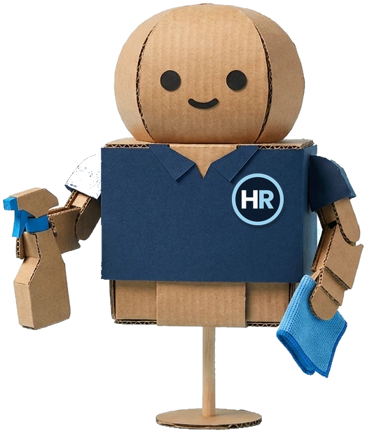

Tipp vom Profi
Ein graues Putztuch
putzt nicht.
Es verteilt.
Was wirklich passiert
Zweimal falten, vier Lagen
ACHT
saubere Flächen aus einem Tuch
Tipp vom Profi
Pro Bereich
eine frische Fläche.
Grau?
Umklappen statt weiterwischen.


Richtpreis für euer Büro
in 1 Minute
habibireinigung.ch
Büros · Praxen · Studios · Chur